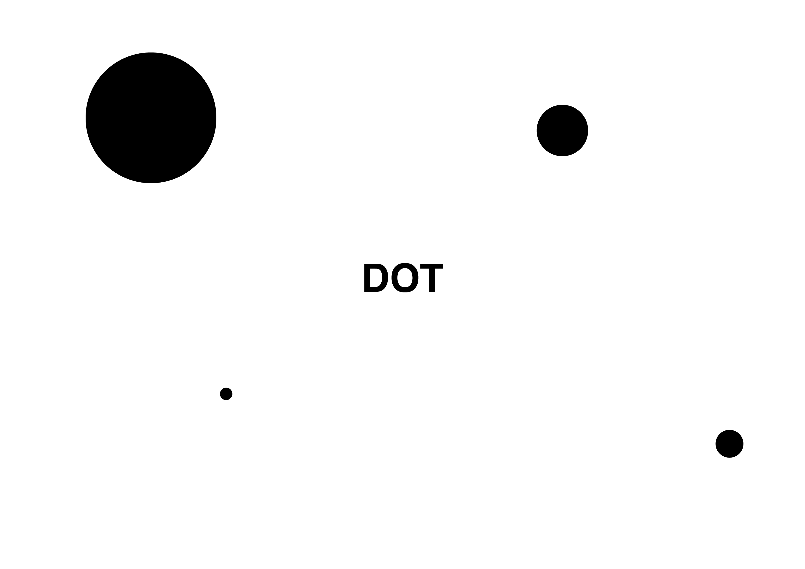

모든 도형의 궁극적 구성 요소인 가장 단순한 도형으로서 위치만 있고 넓이도 길이도 크기도 없는 것. 크기를 가지지 않고 공간을 점유하지 않지만 특정한 위치를 지정할 수 있는 가상적인 개체를 말한다. 그래서 우리가 종이에 찍은 점들은 수학적 의미로서는 점이 아니다. 그런 의미에서 dot와 point를 구별해서 사용하는 수학자도 있다. 점은 두 선이 만나서 생기기도 한다.
사실, 현대 수학에서는 점에 대한 정의를 일반화하기 어렵다. 왜냐하면 오늘날 수학에서는 공간이라는 개념을 너무나 느슨하게 다루기 때문에 '공간의 원소' 정도인 점에 대해 딱히 어떤 정의를 붙이는 게 힘들다. 예를 들어, R^2 에 정의된 모든 일차함수의 집합을 생각해보자. 여기에 위상을 적절히 정의하면 뫼비우스의 띠와 동형인 위상'공간'이 되는데, 이 위상'공간'의 점인 일차함수는 따지고보면 '직선'이다. 즉, 이런 경우, 점이 선이 되버리고 마는 것이다.[1] 단, 일반적으로 0차원 도형을 점이라고 정의한다.